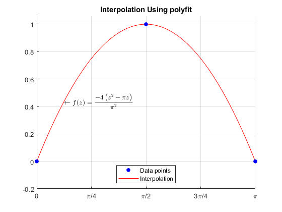

Contents
Copyright
close all; format compact; clc;
fprintf("Engineer: Rodrigo Becerril Ferreyra\n");
fprintf("Company: California State University, Long Beach\n");
fprintf("Project Name: Task 5\n");
fprintf("Date: 20 October 2020\n");
Engineer: Rodrigo Becerril Ferreyra
Company: California State University, Long Beach
Project Name: Task 5
Date: 20 October 2020
Problem 1
fprintf("\nProblem 1\n");
clear variables;
x = [0, 2, 5];
y = [0, -1, 5];
domain = linspace(0, 5, 101);
f = @(z) (z.^2 - 3.*z)./2;
figure(); hold on;
line = plot(domain, f(domain), 'r-');
points = plot(x, y, 'b.', "MarkerSize", 20);
title("Manual Interpolation Calculation");
legend([points, line], ["Data points", "Interpolation"], "Location", "northwest");
text(3.1, 0, "$$\leftarrow f(z) = \frac{z^2 - 3z}{2}$$", "Interpreter", "latex");
grid on;
hold off;
fprintf("The interpolating function is (z^2 - 3*z)/2.\n");
Problem 1
The interpolating function is (z^2 - 3*z)/2.
Problem 2
fprintf("\nProblem 2\n");
clear variables;
x = 0:10;
y = x.^2 + 3.*x + 2;
sample_points = [1/2, 3/2, 5/2];
lines = cell(1, length(x)-1);
for i = 1:(length(x)-1)
lines{i} = @(z) (z - x(i+1))./(x(i) - x(i+1)) .* y(i) + (z - x(i))./(x(i+1) - x(i)) .* y(i+1);
end
figure(); hold on;
for i = 1 : length(lines)
domain = linspace(x(i), x(i+1), 11);
l = plot(domain, lines{i}(domain), 'r-');
end
p = plot(x, y, 'b.', "MarkerSize", 20);
grid on;
title("Linear Interpolation Between Points");
legend([p, l], ["Data points", "Interpolating lines"], "Location", "northwest");
hold off;
for i = 1:3
experimental = lines{i}(sample_points(i));
actual = sample_points(i).^2 + 3.*sample_points(i) + 2;
fprintf("Relative error of approximating f(%3.1f): %f%%\n", sample_points(i), 100*abs(experimental - actual)/actual);
end
Problem 2
Relative error of approximating f(0.5): 6.666667%
Relative error of approximating f(1.5): 2.857143%
Relative error of approximating f(2.5): 1.587302%
Problem 3
fprintf("\nProblem 3\n");
clear variables;
c = polyfit([0, pi/2, pi], [0, 1, 0], 2);
fprintf("The polynomial that goes through the points (0, 0), (pi/2, 1), and (pi, 0) is\n");
fprintf("f(x) = %fx^2 + %fx + %f\n", c(1), c(2), c(3));
fprintf("More precisely, f(x) = (-4/pi^2)x^2 + (4/pi)x; see attached image");
figure(); hold on;
domain = linspace(0, pi, 101);
line = plot(domain, polyval(c, domain), 'r-');
points = plot([0, pi/2, pi], [0, 1, 0], 'b.', "MarkerSize", 20);
legend([points, line], ["Data points", "Interpolation"], "Location", "south");
grid on;
title("Interpolation Using polyfit");
axis([0, pi, -0.2, 1.0625]);
set(gca,'XTick',0:pi/4:pi); set(gca,'XTickLabel',{'0', '\pi/4', '\pi/2', '3\pi/4', '\pi'});
text(pi/8, polyval(c, pi/8), "$$\leftarrow f(z) = \frac{-4\left(z^2 - \pi z\right)}{\pi^2}$$", "Interpreter", "latex");
hold off;
Problem 3
The polynomial that goes through the points (0, 0), (pi/2, 1), and (pi, 0) is
f(x) = -0.405285x^2 + 1.273240x + -0.000000
More precisely, f(x) = (-4/pi^2)x^2 + (4/pi)x; see attached image

Problem 4
fprintf("\nProblem 4\n");
clear variables;
figure(); hold on;
interpol = @(z) (-8.*z.^3 + 8*pi^2.*z)./(3*pi^3);
domain = linspace(-pi/2, pi, 101);
lines = plot(domain, interpol(domain), 'r-');
points = plot([-pi/2, 0, pi/2, pi], [-1, 0, 1, 0], 'b.', "MarkerSize", 20);
set(gca,'XTick',-pi/2:pi/4:pi); set(gca,'XTickLabel',{'-\pi/2', '-\pi/4', '0', '\pi/4', '\pi/2', '3\pi/4', '\pi'});
axis([-pi/2, pi, -interpol(pi/sqrt(3)), interpol(pi/sqrt(3))]);
legend([points, lines], ["Data points", "Interpolation"], "Location", "southeast");
grid on;
title("Manual Interpolation Calculation")
text(-pi/4, interpol(-pi/4), "$$\leftarrow f(z) = \frac{-8z^{3}+8\pi^{2}z}{3\pi^{3}}$$", "Interpreter", "latex");
hold off;
fprintf("The interpolating function is f(z) = (-8z^3 + 8pi^2*z)/(3pi^3).\n");
Problem 4
The interpolating function is f(z) = (-8z^3 + 8pi^2*z)/(3pi^3).
Problem 5
fprintf("\nProblem 5\n");
clear variables;
x = [-pi, -pi/2, 0, pi/2, pi];
y = [0, -1, 0, 1, 0];
figure(); hold on;
domain = -pi:pi/20:pi;
lines = plot(domain, spline(x, y, domain), 'r-');
points = plot(x, y, 'b.', "MarkerSize", 20);
grid on;
legend([points, lines], ["Data points", "Interpolation"], "Location", "southeast");
title("Interpolation Using spline");
set(gca,'XTick',-pi:pi/2:pi); set(gca,'XTickLabel',{'-\pi', '-\pi/2', '0', '\pi/2', '\pi'});
hold off;
Problem 5
Problem 6
fprintf("\nProblem 6\n");
clear variables;
x = 0 : 0.1 : 1;
y = [3.16, 3.01, 2.73, 2.47, 2.13, 1.82, 1.52, 1.21, 0.76, 0.43, 0.03];
ab = [sum(sin(x).^2), sum(sin(x).*cos(x)); sum(cos(x).*sin(x)), sum(cos(x).^2)] \ [sum(y.*sin(x)); sum(y.*cos(x))];
a = ab(1); b = ab(2); clear ab;
figure(); hold on;
f = @(x) a.*sin(x) + b.*cos(x);
func = plot(x, f(x), 'r-');
points = plot(x, y, 'b.', "MarkerSize", 20);
grid on;
legend([points, func], ["Data points", "$$y=a\sin(x) + b\cos(x)$$"], "Location", "southwest", "Interpreter", "latex")
text([0.025, 0.025], [1.5, 1], [sprintf("$$a = %f$$", a), sprintf("$$b = %f$$", b)], "Interpreter", "latex");
title("Line of Best Fit Approximation");
hold off;
Problem 6
Problem 7
fprintf("\nProblem 7\n");
clear variables;
x = [-pi, -pi/2, 0, pi/2, pi];
y = [0, -1, 0, 1, 0];
figure(); hold on;
domain = -pi:pi/20:pi;
s = spline(x, y, domain);
f = sin(domain);
spline_ = plot(domain, s, 'r-');
func = plot(domain, f, 'g-');
points = plot(x, y, 'b.', "MarkerSize", 20);
grid on;
legend([points, spline_, func], ["Data points", "Interpolation", "$$y=\sin(x)$$"], "Location", "southeast", "Interpreter", "latex");
title("Interpolation Using spline Compared to Original Function");
set(gca,'XTick',-pi:pi/2:pi); set(gca,'XTickLabel',{'-\pi', '-\pi/2', '0', '\pi/2', '\pi'});
hold off;
fprintf("The sum of the squared errors over the (discretely-defined) domain is %f\n", sum((s - f).^2));
Problem 7
The sum of the squared errors over the (discretely-defined) domain is 0.389921
Problem 8
fprintf("\nProblem 8\n");
clear variables;
fprintf("f(x) = x^3 + sin(x) - 1\n");
x = 1:11+1;
f = x.^3 + sin(x) - 1;
c = polyfit(x, f, length(x)-1);
fprintf("f(4.5) = %f\n", polyval(c, 4.5));
fprintf("f(15) = %f\n", polyval(c, 15));
figure(); hold on;
domain = linspace(0, 15, 101);
lines = plot(domain, polyval(c, domain), 'r-');
points = plot(x, f, 'b.', "MarkerSize", 20);
wanted = plot([4.5, 15], [polyval(c, 4.5), polyval(c, 15)], 'g.', "MarkerSize", 20);
grid on; axis([0, 15, -1, polyval(c, 15)]);
title("Interpolation and Extrapolation");
legend([points, lines, wanted], ["Data points", "Interpolation/Extrapolation", "Interesting points"], "Location", "northwest");
hold off;
Problem 8
f(x) = x^3 + sin(x) - 1
Warning: Polynomial is badly conditioned. Add points with distinct X values,
reduce the degree of the polynomial, or try centering and scaling as described
in HELP POLYFIT.
f(4.5) = 89.147466
f(15) = 3336.280580